Spain's great cities in one trip, built from our city-by-city ideas. Three nights in Madrid with the Prado and a day in Toledo, the fast train to Córdoba's Mosque-Cathedral and on to Seville, two nights in Granada for the Alhambra and the Albaicín, and three nights in Barcelona for Gaudí and Montserrat. The Alhambra's Nasrid Palaces are by timed ticket only and sell out weeks ahead, so we book them when you confirm.
See it for yourself
Photos from the journey
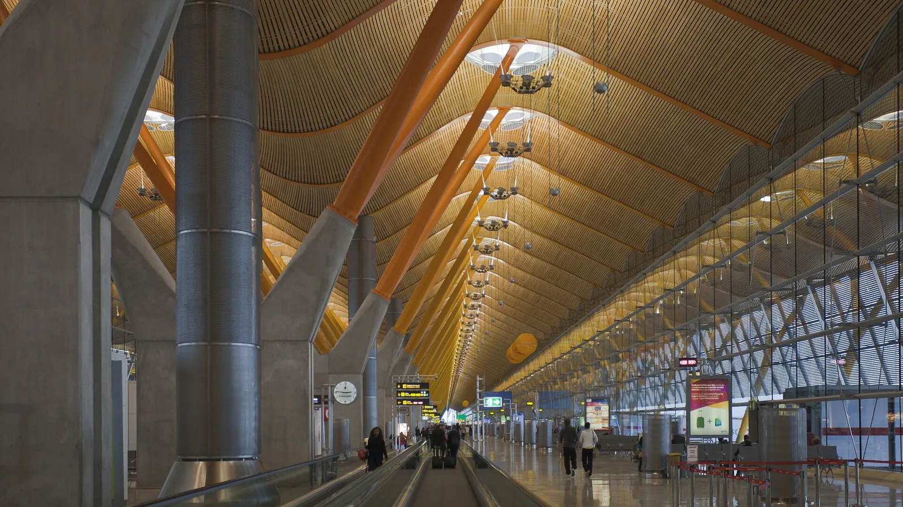
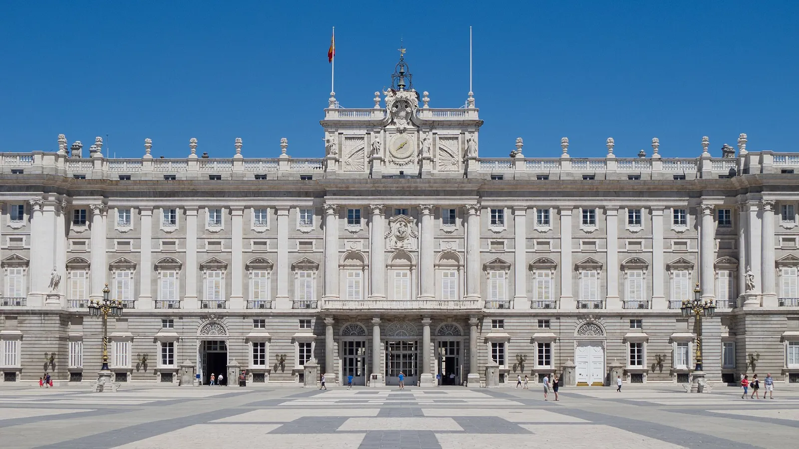
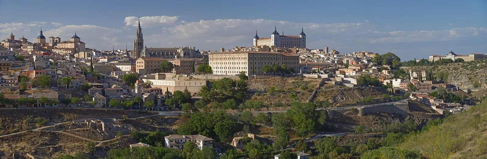
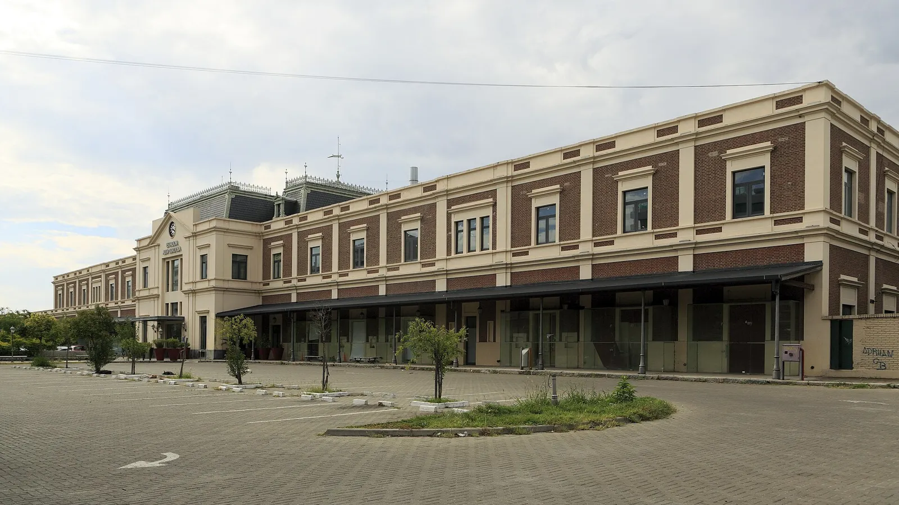
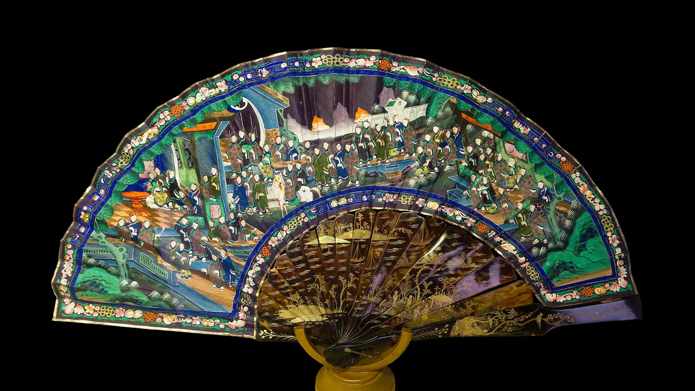
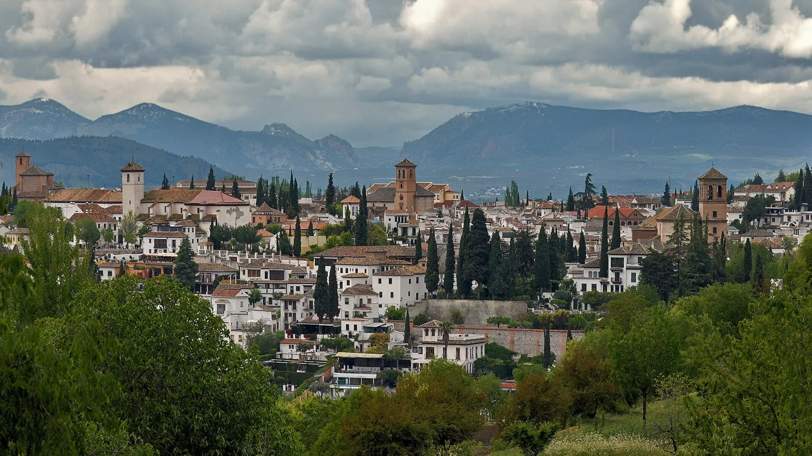
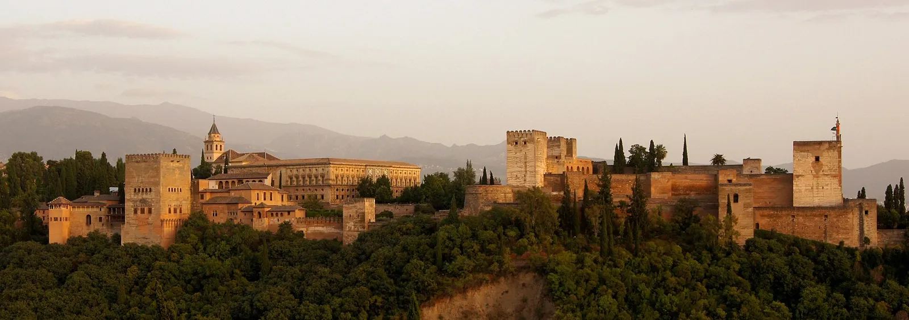
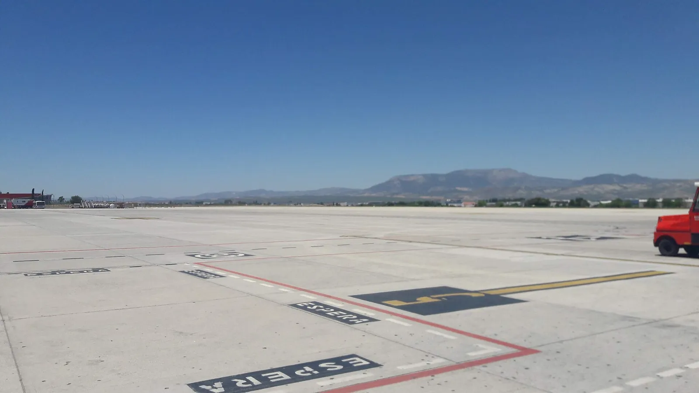
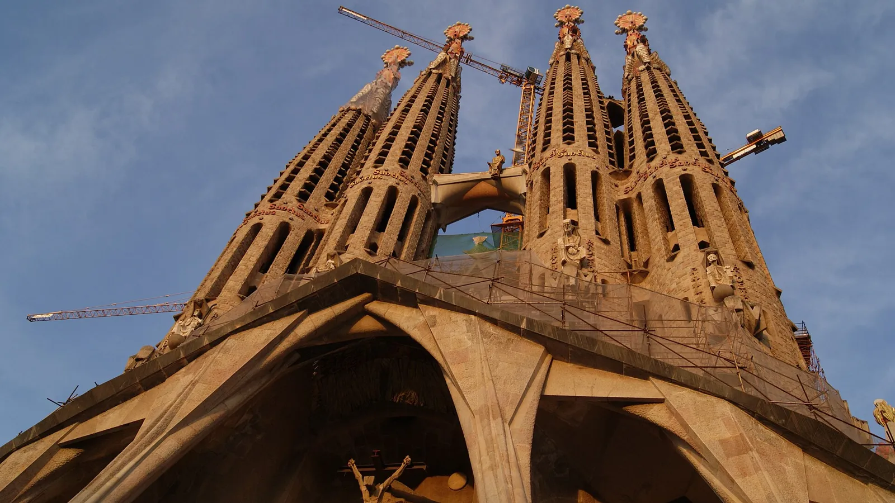
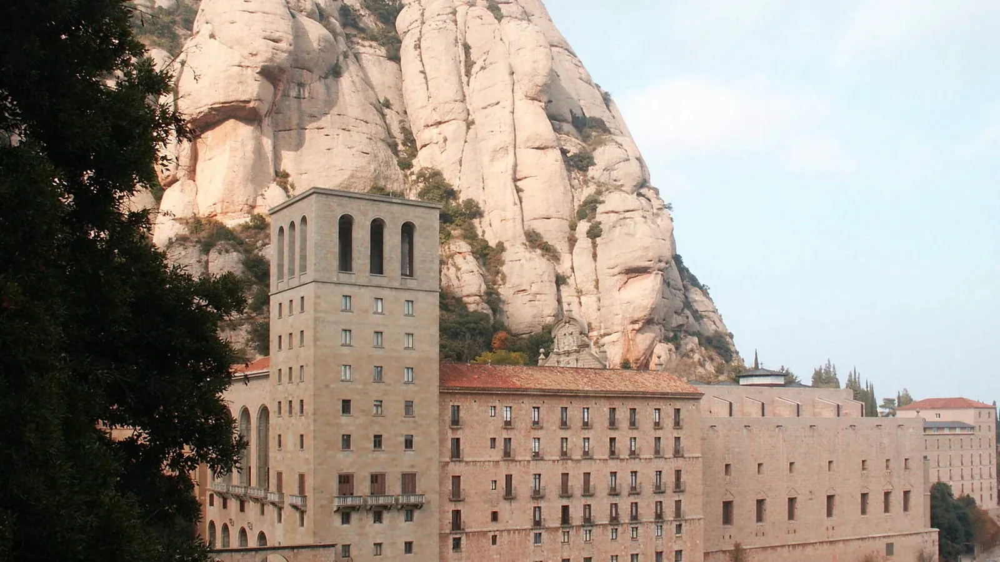
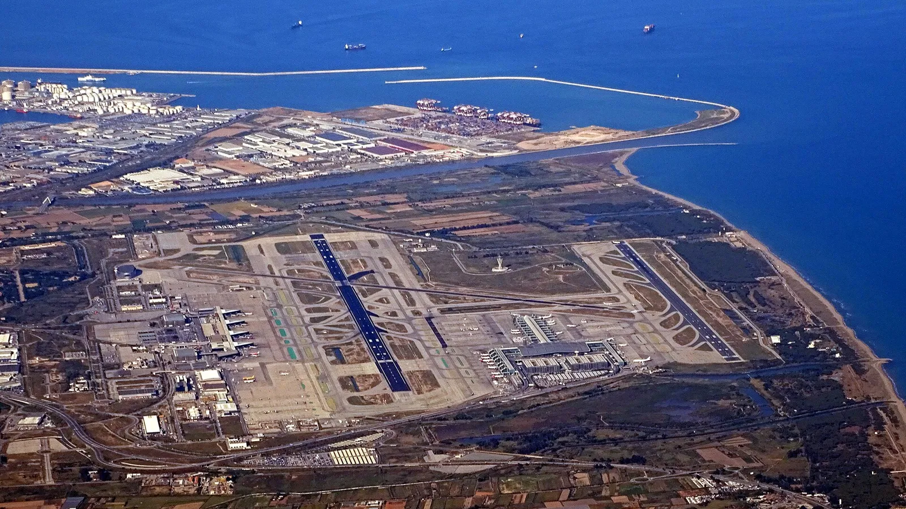
Where you go
The journey on one map
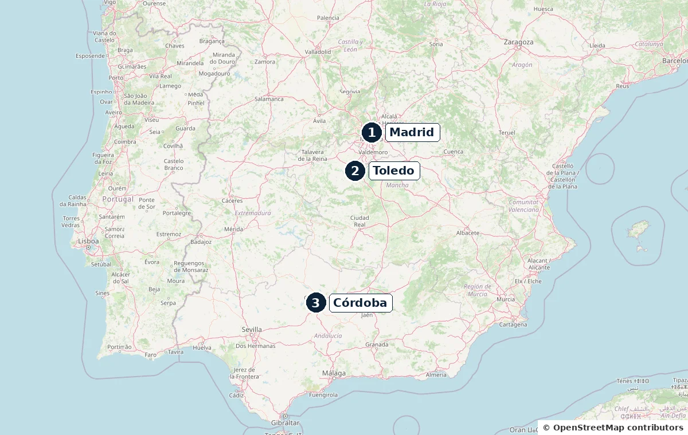
Day by day, in short
Daily travel brief
Distances are by road for the whole day. The full plan with timings comes with your detailed itinerary.
-
1
Arrive in Madrid
- Tapas bars serve vegetarian dishes such as patatas bravas, pimientos and tortilla (with egg).
-
2
Royal Madrid and the Prado
- Royal Palace: book timed tickets; the palace closes for state events.
- The Prado is free in the last two hours of each day, but queues are long.
-
3
Toledo
Sinagoga de Santa María la Blanca
- Option: Segovia's Roman aqueduct instead, 30 minutes by fast train.
-
4
Córdoba's Mosque-Cathedral, then Seville
Mezquita-Catedral de Córdoba Roman bridge of Córdoba
- Mosque-Cathedral: it is a working cathedral; dress modestly.
- Córdoba is the hottest city in Spain in summer; visit early.
-
5
Seville and flamenco
Seville Cathedral Plaza de España
- Real Alcázar: timed tickets; arrive at your slot.
- A siesta is wise in summer: the heat peaks from 14:00 to 18:00.
-
6
Train to Granada and the Albaicín
- Mirador de San Nicolás: watch bags at the viewpoint; it is crowded at sunset.
- Taxis and minibuses climb the narrow Albaicín lanes; walk down.
-
7
The Alhambra and the Generalife
- Nasrid Palaces: entry to the Nasrid Palaces is at your exact time slot; you cannot enter late.
- Granada bars often serve a free tapa with each drink.
-
8
Fly to Barcelona
Barcelona El Prat Airport Barri Gòtic
- Gothic Quarter and La Rambla: la Rambla and the metro are pickpocket hotspots.
- Barcelona dines late too.
-
9
Gaudí's Barcelona
- Sagrada Família: timed tickets sell out; book weeks ahead.
- Option: the Camp Nou tour for football fans.
-
10
Montserrat
- Option instead: Sitges beach town or Girona.
-
11
Fly home from Barcelona
- Transfer to the airport: be at the airport 3 hours before an international flight.
- Claim the VAT refund at the airport for shopping over the minimum.
Local know-how
Travel hacks from our desk
Hotel deposit
Use a credit card for the deposit or pre-authorisation at check-in, never a forex or debit card. Forex cards cannot hold funds, many hotels refuse them, and a credit-card hold is released faster.
Cards and cash
On card machines, always choose to pay in euros, never in INR. Cards work almost everywhere. Carry about EUR 50 in cash for small cafés, toilets and markets.
Pickpockets
Busy stations, trams and squares are pickpocket hotspots. Keep passports in the hotel safe, carry a copy, and wear your bag in front in crowds.
Plugs, water and meal times
Plugs are the two round-pin type C and F at 230 volts (Switzerland uses type J; a type C plug fits). Tap water is safe to drink. Lunch is about 12:00 to 14:00 and dinner from about 18:30.
When to go
Best time to visit for this journey
April, May or October.
April to June and September to October. Seville and Córdoba are very hot in July and August.
The package
What's included
Included
- 10 nights with breakfast
- AVE and regional train tickets
- Flight Granada to Barcelona
- Guided Alhambra visit with Nasrid Palaces timed ticket
- Flamenco show
- 24/7 support from Blue Diamond Voyage
Not included
- International flights
- Schengen visa
- Other entry fees
- Lunches and dinners
- Travel insurance
- City taxes
The detailed itinerary
Some journeys are planned. Ours are crafted.
The full 11-day plan is ready: hour-by-hour timings, drive times, temple dress codes, food for your diet and a route map for every day. Tell us your dates and your city, and we'll send it to you on WhatsApp, shaped around you.
- Hour-by-hour timings
- A route map for every day
- Hotel and room details
- Visa and entry steps
- Vegetarian and Jain dining
24/7 travel desk+91 97148 59797+91 98242 21400
Photo and map credits
- Madrid Barajas Airport: Diego Delso, CC BY-SA 3.0, via Wikimedia Commons
- Royal Palace of Madrid: Carlos Delgado, CC BY-SA 3.0, via Wikimedia Commons
- Toledo Cathedral: Ввласенко, CC BY-SA 3.0, via Wikimedia Commons
- Córdoba railway station: Falk2, CC BY-SA 4.0, via Wikimedia Commons
- Real Alcázar de Sevilla: Jebulon, CC0, via Wikimedia Commons
- Granada: Ввласенко, CC BY-SA 3.0, via Wikimedia Commons
- Alhambra: Jebulon, Public domain, via Wikimedia Commons
- Granada Airport: Don-vip, CC BY-SA 4.0, via Wikimedia Commons
- Sagrada Família: Jopparn, CC BY-SA 3.0, via Wikimedia Commons
- Montserrat: Gyrofrog, CC BY-SA 2.5, via Wikimedia Commons
- Barcelona El Prat Airport: Ad Meskens, CC BY-SA 4.0, via Wikimedia Commons
- Maps: © OpenStreetMap contributors; road routes by OSRM.